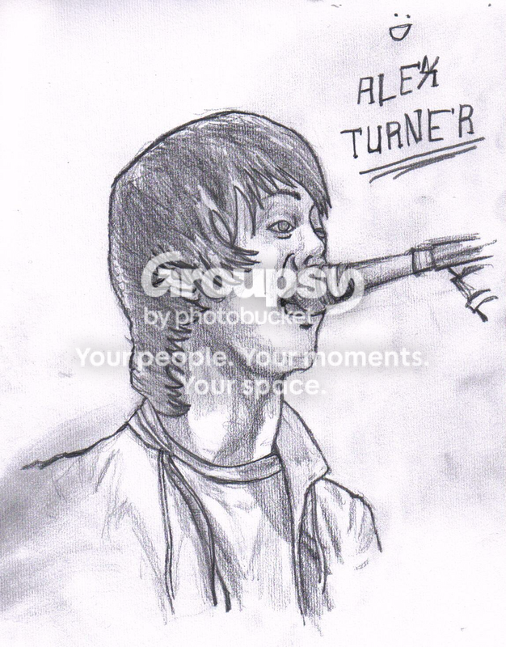
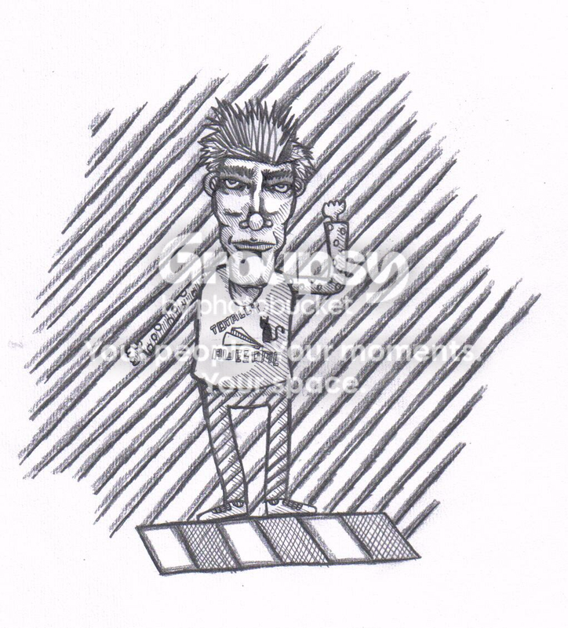
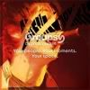
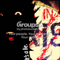
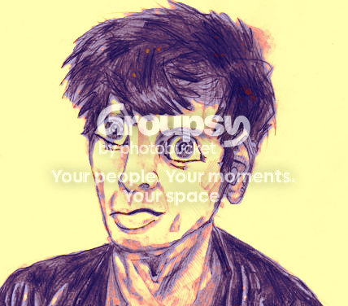
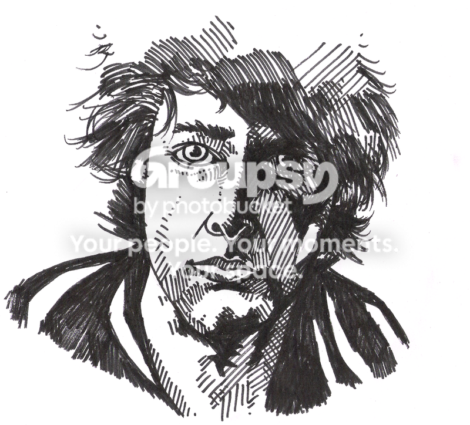
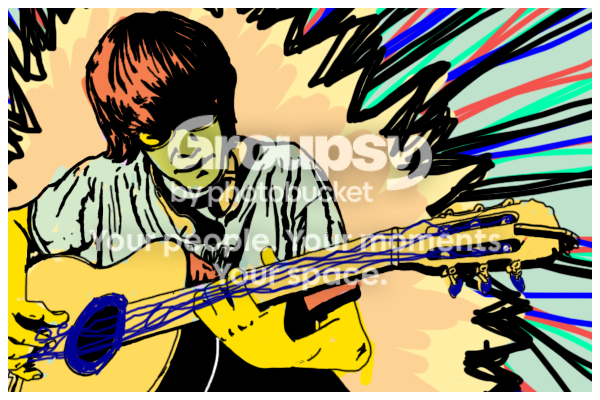
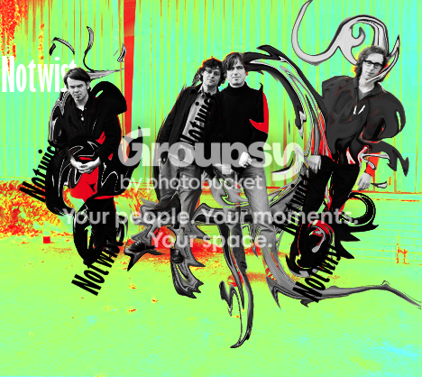

New bands the last few (2-3) months: Queens of the Stone Age, Vampire Weekend, Talking Heads, Sonic Youth, The New Wine, The Yummy Fur, Los Campesinos!, Sublime, Joy Division, The Last Shadow Puppets, Datarock, Dag Vag, The Good The Bad & The Queen, some Gorillaz, some Beatles and some Foo Fighters. And I've recently started listening to some The Strokes, Ima Robot and The Go! Team.
Queens of the Stone Age - The Fun Machine Took a Shit & Died
I've got Absolution and Black Holes & Revelations, and I recently got Origin of Symmetry.
They're damn good, especially Absolution. I'm no powerfan though.
They're damn good, especially Absolution. I'm no powerfan though.
1: The Clash
2-5:
Franz Ferdinand
Arctic Monkeys
Superfamily
Mad Caddies
6-10:
Red Hot Chili Peppers
Smashing Pumpkins
The Hives
Datarock
Bloc Party
I play bass and guitar.
2-5:
Franz Ferdinand
Arctic Monkeys
Superfamily
Mad Caddies
6-10:
Red Hot Chili Peppers
Smashing Pumpkins
The Hives
Datarock
Bloc Party
I play bass and guitar.
This is some new digital stuff drawn on facebook, with a touchpad (the integrated mouse on a laptop, not some kind of tablet).
Also, my newest traditional:
Got some stuff at deviantArt as well, if anyone's interested.
Also, my newest traditional:


Got some stuff at deviantArt as well, if anyone's interested.
Making some signatures and digital stuff once in a while, in periods. Haven't made anything in months now. Got pretty boring. The colors are pretty bad on any computer but mine though, it seems. Mine seem to be lighter.
This one's easily my best:
Some avatars:
And some Large Pieces:
http://i147.photobucket.com/albums/r312/wa...saLie_2copy.png
http://i147.photobucket.com/albums/r312/wa...saLie_1copy.png
[URL=[img]http://i147.photobucket.com/albums/r312/wakkawa/robot2.png[/img]][/url]
This one's easily my best:
Some avatars:


And some Large Pieces:
http://i147.photobucket.com/albums/r312/wa...saLie_2copy.png

http://i147.photobucket.com/albums/r312/wa...saLie_1copy.png

[URL=[img]http://i147.photobucket.com/albums/r312/wakkawa/robot2.png[/img]][/url]

Twin Peaks
The Young Ones
Flight of the Conchords
Tenacious D
Absolutely Fabolous
Heroes
House
That 70's Show
Futurama
Six Feet Under
The Office (british)
probably some more.
Twin Peaks is fantastic.
The Young Ones
Flight of the Conchords
Tenacious D
Absolutely Fabolous
Heroes
House
That 70's Show
Futurama
Six Feet Under
The Office (british)
probably some more.
Twin Peaks is fantastic.
I've beaten it aswell, wasn't that hard, just timetaking.
Brag some.
Original userlevel: Mines Path 2. Has anyone else done that?
Custom userlevel: I dunno, haven't downloaded any hard yet.
Original userlevel: Mines Path 2. Has anyone else done that?
Custom userlevel: I dunno, haven't downloaded any hard yet.
Why would I want base colors?
Thanks, I usually get that kind of response. Some loves it, some hates it. 8D
Thanks, I usually get that kind of response. Some loves it, some hates it. 8D
Even when I specify I'm not using a tablet, I'm mistaken :[ I'm using a touchpad on a laptop.
Thanks alot anyway :3 I'm very un-productive these days, and I've got exams and all. But here's 2 quick ones I did some time ago.
I've just started with digital art though, I like it alot. Gonna get a tablet after the summer I think.
Thanks alot anyway :3 I'm very un-productive these days, and I've got exams and all. But here's 2 quick ones I did some time ago.
I've just started with digital art though, I like it alot. Gonna get a tablet after the summer I think.
The Replacements - Sixteen Blue
I'm listening to this album and this band for the first time. Sounds very promising.
I'm listening to this album and this band for the first time. Sounds very promising.
I played alot before I started playing real guitar and bass :3
I even have a scorehero Dx
No great achievments, I've been too lazy to sit down and get some. I've had a -3 at Nothing For Me Here, that's probably the best.
I even have a scorehero Dx
No great achievments, I've been too lazy to sit down and get some. I've had a -3 at Nothing For Me Here, that's probably the best.
I played alot before I started playing real guitar and bass :3Ragamuffin, in the future, PLEASE read the "Posted on:" dates, to prevent reviving of dead topics.
I even have a scorehero Dx
No great achievments, I've been too lazy to sit down and get some. I've had a -3 at Nothing For Me Here, that's probably the best.
I checked out for GH topics, and I found one on page 3 I think it was. It was from february I think, and the guy posting it was told to use this topic.
New FC's:
Kool Thing
Anarchy In The UK (bleh)
And I re-FCed Paranoid with 348k.
Gonna see if I can get some harder songs now, Rock You Like A Hurricane for example.
Kool Thing
Anarchy In The UK (bleh)
And I re-FCed Paranoid with 348k.
Gonna see if I can get some harder songs now, Rock You Like A Hurricane for example.
Joe Strummer,
Mick Jones,
Paul Simonon,
Topper Headon.
Mick Jones,
Paul Simonon,
Topper Headon.
Arctic Monkeys - Matador
Bloc Party - This Modern Love
The Clash - White Man In Hammersmiths Palais
Datarock - Princess
Eagles of Death Metal - I Want You So Hard (Boy's Bad News)
Franz Ferdinand - Wine In The Afternoon
The Good, The Bad & The Queen - The Good, The Bad & The Queen
The Hives - No Pun Intended
Iggy Pop - I Am a Passenger
Joe Strummer & The Mescaleros - Arms Aloft
The Karelia - Divorce At High Noon [French Version]
The Last Shadow Puppets - In the Heat of the Morning
Mad Caddies - Macho Nachos
The New Wine - I Had to Tell You
Oasis - Cigarettes & Alcohol
Pink Floyd - Dogs
Queens of the Stoneage - The Fun Machine Took a Shit and Died
Radiohead - Bodysnatchers
Smashing Pumpkins - Hummer
Talking Heads - Once In A Lifetime
U2 - Sunday, Bloody Sunday
Vampire Weekend - M79
The Who - The Seeker
Xzibit - Hey Now (Mean Muggin)
The Yummy Fur - Colonel Blimp
ZZ Top - La Grange
I haven't heard much else by ZZ Top, U2 and Xzibit. And I don't really want to either.
Bloc Party - This Modern Love
The Clash - White Man In Hammersmiths Palais
Datarock - Princess
Eagles of Death Metal - I Want You So Hard (Boy's Bad News)
Franz Ferdinand - Wine In The Afternoon
The Good, The Bad & The Queen - The Good, The Bad & The Queen
The Hives - No Pun Intended
Iggy Pop - I Am a Passenger
Joe Strummer & The Mescaleros - Arms Aloft
The Karelia - Divorce At High Noon [French Version]
The Last Shadow Puppets - In the Heat of the Morning
Mad Caddies - Macho Nachos
The New Wine - I Had to Tell You
Oasis - Cigarettes & Alcohol
Pink Floyd - Dogs
Queens of the Stoneage - The Fun Machine Took a Shit and Died
Radiohead - Bodysnatchers
Smashing Pumpkins - Hummer
Talking Heads - Once In A Lifetime
U2 - Sunday, Bloody Sunday
Vampire Weekend - M79
The Who - The Seeker
Xzibit - Hey Now (Mean Muggin)
The Yummy Fur - Colonel Blimp
ZZ Top - La Grange
I haven't heard much else by ZZ Top, U2 and Xzibit. And I don't really want to either.
FC'd La Grange after loads of struggle with the BOBOBOYBOBOBOBOBOYBO part.
And I FC'd Same Old Song And Dance, got 13th at Scorehero D:
And 8th at Reptilia D:
Did some more re-FC's too.
And I FC'd Same Old Song And Dance, got 13th at Scorehero D:
And 8th at Reptilia D:
Did some more re-FC's too.
Thanks alot  I'm drawing these days, I'll probably do some more when I get bored drawing.
I'm drawing these days, I'll probably do some more when I get bored drawing.
I'm drawing these days, I'll probably do some more when I get bored drawing.Hm, I didn't notice the comments. Thanks alot (:
I morphed some of my old drawing with Photoshop cut+copy. This looks truly fantastic.
I've drawn a couple of drawings as well, just haven't scanned them yet.
I morphed some of my old drawing with Photoshop cut+copy. This looks truly fantastic.

I've drawn a couple of drawings as well, just haven't scanned them yet.
these are pretty cool, especially your Cloud one on dA. I WANT A PRINT!!!!
Woot. I can probably add it as a print on dA or whatever, if I figure how to do that... Too bad I'm not good at digitally editing my drawings though, it looks pretty messy with the smudging and all.
It's only the digital art that's on a mousepad. Low mouse-speed, high zoom and loads of Undo does it 
Didn't work to submit it as a print by the way, I dunno why :3
Didn't work to submit it as a print by the way, I dunno why :3
K, I'll do that later I guess. Here's another D:
These are very cool. A little anatomy problems that can only be worked out through more practice. I'd like to see more of these and also, draw female faces as well.
Can you point out the anatomy problems? And no, I'm not complaining about critique, I love critique, just would like to know
And also: thanks alot.I've drawn some female faces, never scanned them though.
Los Campesinos - We Are All Accelerated Readers
Ah, yeah. That's intentional.
I'm not good at anatomy though, when I'm drawing without a reference. I'm kinda practicing that these days.
I'm not good at anatomy though, when I'm drawing without a reference. I'm kinda practicing that these days.
Meh, that's boring. I've got several of those books anyway, got them for presents, etc. It's just incredibly boring. I'd rather draw for the fun of it.
I want to learn to draw technically good, I might try and do that later, but I definately won't use much of it. I'm tired of the same old Marvel and DC drawings, they all look the same.
But I like much better to draw with my own style. I've started doing that with portraits as well, like with that Alex Turner drawing.
I want to learn to draw technically good, I might try and do that later, but I definately won't use much of it. I'm tired of the same old Marvel and DC drawings, they all look the same.
But I like much better to draw with my own style. I've started doing that with portraits as well, like with that Alex Turner drawing.
My dream is to draw comics  I've tried though, it's hard. Won't be doing it anytime soon. And most of all, I'd like to draw comic novels, and longer stories.
I've tried though, it's hard. Won't be doing it anytime soon. And most of all, I'd like to draw comic novels, and longer stories.
I've tried though, it's hard. Won't be doing it anytime soon. And most of all, I'd like to draw comic novels, and longer stories.I like the face alot, it's creative, and I like the style of it, except for the hair.
I kinda like your dark style, but I'm not very fond of the rest of your drawings. But you should keep practicing, you've probably got potential.
I kinda like your dark style, but I'm not very fond of the rest of your drawings. But you should keep practicing, you've probably got potential.
I made a new one, pretty much in that Alex Turner style that people seem to like. (Not because people liked it, because I felt like D:)
Neil Gaiman:
Neil Gaiman:

That reminds me alot of a drawing in an Inger Hagerup book.
I like it.
I like it.
Thanks! I got pretty happy with it myself, except for at several points.
Been listening to
Been listening to
Beatles
The Beautiful Girls
Can
Cut Copy
Familjen
Foo Fighters
Franz Ferdinand (B-sides and whatnot)
Hot Chip
Joy Division (!!)
The Kooks
Last Shadow Puppets
Los Campesinos!
Madrugada
The New Wine (!)
Nick Cave
The Notwist
Oasis
Queens of the Stone Age (!)
Radiohead
Razika
The Replacements (;D)
The Residents (some)
Rubies
The Smiths
Sublime (!)
The Yummy Fur (!)
The last month or so.
Been listening to
Beatles
The Beautiful Girls
Can
Cut Copy
Familjen
Foo Fighters
Franz Ferdinand (B-sides and whatnot)
Hot Chip
Joy Division (!!)
The Kooks
Last Shadow Puppets
Los Campesinos!
Madrugada
The New Wine (!)
Nick Cave
The Notwist
Oasis
Queens of the Stone Age (!)
Radiohead
Razika
The Replacements (;D)
The Residents (some)
Rubies
The Smiths
Sublime (!)
The Yummy Fur (!)
The last month or so.
... And You Will Know Us By The Trail Of Death - Half Of What
Finished this one just now.

Haven't checked in here for a while. Thanks a lot, dude.
And I've gotta comment your sig. Except for the Izzy text and the blister in his face / on his hat, that's one incredibly awesome sig.
And I've gotta comment your sig. Except for the Izzy text and the blister in his face / on his hat, that's one incredibly awesome sig.
That really appeals to me. Awesome colors. I just don't like text alot, especially not "Izzy". And you should keep the blister off his hat and face. Else that's a fucking awesome signature.
Dis be for Izzy.
Edit: The one you made for Heartattack I like even better, and that's original too :3 Those hearts are pretty awful though.
I could fix this, but I'm not sure if I will. Gotta blend it better into the background and make it less messy at some points. Wellwell.
Also, some avatars. Feel free to use any but the one I'm using. They're very random, and basically offshoot of the one I'm using.

Also, some avatars. Feel free to use any but the one I'm using. They're very random, and basically offshoot of the one I'm using.
Your hearts are awful
Chill mate, let's not attack me because of some silly hearts D:
Quote...do you want one? biggrin.gif
Hey, I wouldn't mind one. Though I don't need one, so if you've got other things to do, feel free not to.
But alright, can I choose http://www.ryanrussell.net/index_josh3.jpg for stock?


I like the one I'm using though.
Joy Division is one of my new favorite bands.
vampire weekend!
That album's incredibly good.
Joy Division - Heart and Soul
The Residents - Act of Being Polite